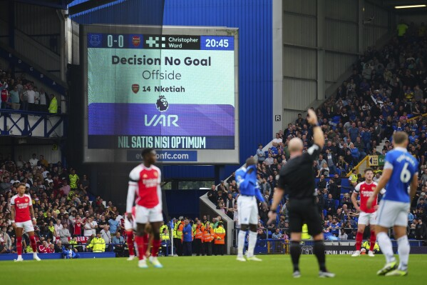

მიმდინარე დაპირისპირებებითა და საინტერესო განვითარებით, გულშემატკივრებს მთელი მსოფლიოს მასშტაბით ბევრი აქვთ გასავლელი ფორმულა ერთში, ფეხბურთსა და კალათბურთში ამ სეზონში
ფორმულა ერთი: ბრაზილიის GP, დაპირისპირება და ახალი ქსელის ცვლილებები
ბრაზილიის გრან-პრიმ დიდი დაპირისპირება გამოიწვია, როდესაც მძღოლებმა, (მათ შორის მაქს ვერსტაპენმა და ლუის ჰემილტონმა) გააკრიტიკეს FIA წითელი დროშის არ გამოცხადების გამო ძლიერი წვიმის დროს, რამაც გამოიწვია საშიშად ბუნდოვანი ხილვადობა და მრავალი ინსიდენტი. ბევრი მძღოლი და გულშემატკივარი ითხოვს უსაფრთხოების უფრო მძლავრ პროტოკოლებს წინსვლისკენ. ამასობაში დიდი ცვლილებები მოდის F1-ის ქსელში. Audi-მ დაადასტურა მათი დებიუტი 2026 წელს და ანდრეტი-კადილაკი პროგრესირებს სპორტთან შეერთების მცდელობაში, რაც პოტენციურად გააფართოვებს ქსელს ახალი კონკურენციით.
ფეხბურთი: VAR სკანდალები და გადანაცვლების ჭორები პრემიერ ლიგაში ბრძოლა
პრემიერ ლიგაში VAR კრიტიკის ქვეშ რჩება მას შემდეგ, რაც გახმაურებულმა შეცდომამ ლივერპულის ლეგიტიმური გოლი გააუქმა ტოტენჰემთან. ლიგის მსაჯთა ორგანიზაციამ ბოდიში მოიხადა, მაგრამ გულშემატკივრები და კლუბები ითხოვენ გაუმჯობესებას მსგავსი შეცდომების თავიდან ასაცილებლად. სატრანსფერო ფრონტზე კილიან მბაპე, არის მოლაპარაკებაში როგორც მადრიდის რეალთან, ასევე პსჟ-სთან, რაც ევროპულ ფეხბურთში ერთ-ერთი ყველაზე დიდი ნაბიჯის გადადგმის საფუძველს ქმნის.
კალათბურთი: შეჩერების დრამა და ამომავალი ახალწვეული ვარსკვლავები
NBA მოქმედება დრამატულად იწყება. დრეიმონდ გრინი ცოტა ხნის წინ შეჩერდა სასამართლოში შეტაკების შემდეგ, რამაც გამოიწვია დებატები NBA დისციპლინური პოლიტიკის შესახებ. იმავდროულად, ახალწვეული ვიქტორ ვემბანიამა აგრძელებს აჟიოტაჟს სან ანტონიო სპურსში თავისი შთამბეჭდავი გამოსვლებით, რაც ფანატების ყურადღებას იპყრობს, როგორც მომავალ ვარსკვლავს.